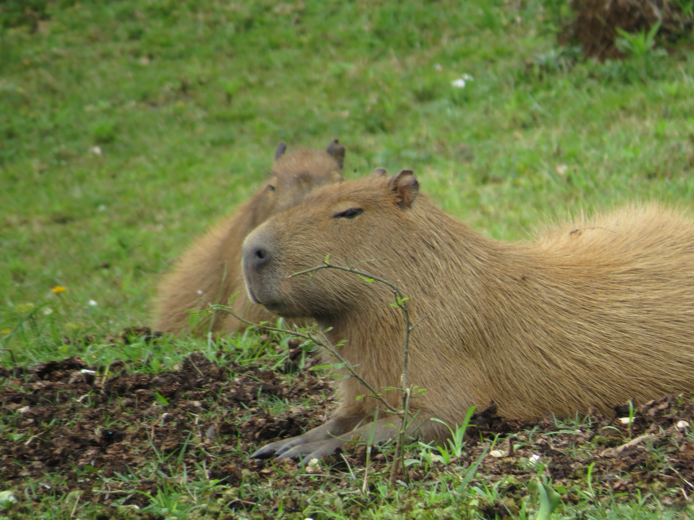

My link in bio 
<html>
  <head>
    <style>
      body{
        padding-top: 40px;
        padding-bottom: 40px;
      }
    </style>

    <style>
      .banner-image{
        width: 128px;
        height: 128px;
        border-radius: 128px;
        object-fit: cover;
      }
    </style>
  </head>
  <body>
    <div class="banner">
      
    </div>

    <div class="name">
      Mati Yang 
    </div>

    <div class="social links">
      # target blank is for links in a new tab (is this right way to leave notes )
      <a href="https://github.com/matildeyang" target="_blank">
        GitHub
      </a>

      <a href="https://www.instagram.com/mati.yang/" target="_blank">
        Instagram
      </a>
    </div>

    <div class="link">
      
      <a target="_blank" href="https://www.theguardian.com/us-news/ng-interactive/2017/dec/20/bussed-out-america-moves-homeless-people-country-study">
        Bussed out: How America has moced the homeless
      </a>
    </div>

    <div class="link">
      
      <a target="_blank" href="https://www.nytimes.com/column/modern-love">
        NY Times Modern Love Column
      </a>
    </div>

  </body>
</html>
